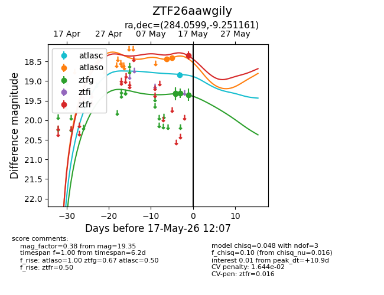
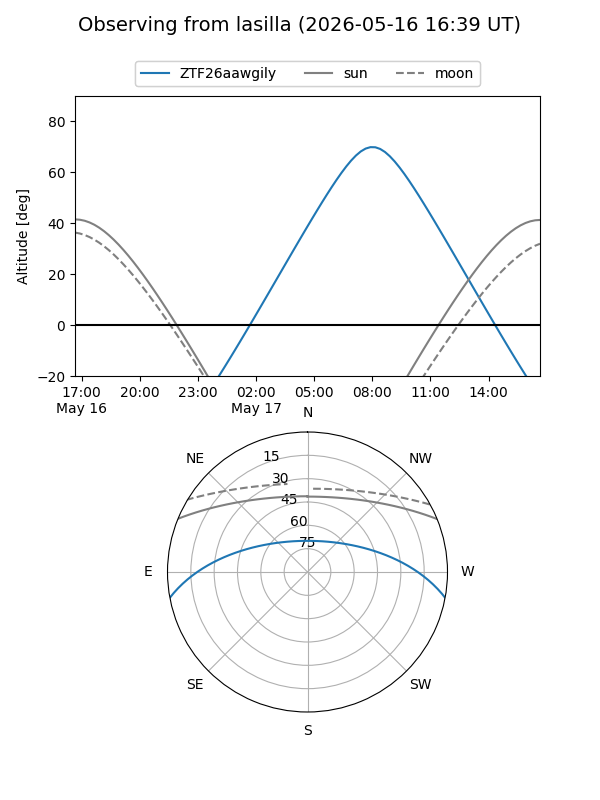
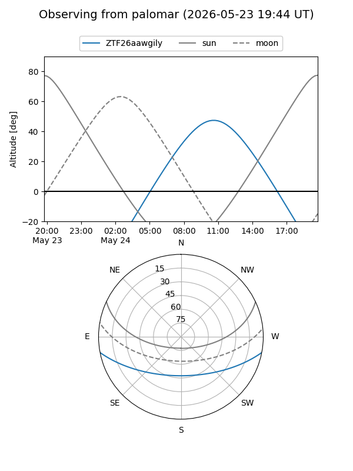
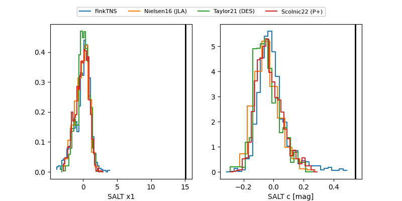

ZTF26aawgily
Target ZTF26aawgily at 2026-05-17 12:09
Aliases and brokers:
FINK: link
Lasair: link
ALeRCE: link
alt names
ZTF26aawgily (ztf,fink_ztf)
Coordinates:
equatorial (ra, dec) = 284.0599,-9.25116
equatorial (HMS+DMS) = 18:56:14.37,-09:15:04.18
galactic (l, b) = (25.2187,-5.26182)
Flags:
likely cv
Photometry:
last atlasc=18.84, atlaso=18.41, ztfg=19.35, ztfr=18.35
1 atlasc, 2 atlaso, 4 ztfg, 1 ztfr detections
Lightcurve

Visibility


Additional plots
